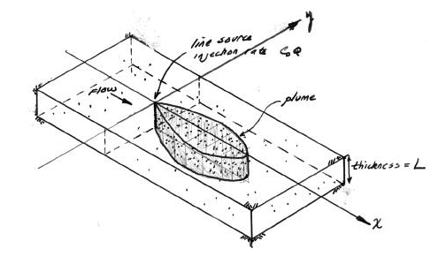

2D Plume in Regional Flow (Hunt Solution)#
The sketch depicts a vertical line source in an aquifer of infinite extent located at (x,y)=(0,0) some time after constant injection has begun.

For the line source (injection well) whose fluid contribution makes negligible impact on the local hydraulics as depicted in the sketch the initial, boundary, and mass conservation conditions are:
A solution obtained by time-convolution of an elementary line source solution (Hunt, 1978) is
where \(W(a,b)\) is the leaky aquifer (Hantush) well function with
The solution is presented in (Bear, 1972) as a convolution integral (eqn. 10.6.38, p. 634) (the end user needs to supply the integration routine); Hunt (1978) noticed that the integral was the leaky well function with appropriate substitutions and completed the solution.
The leaky aquifer function can be evaluated numerically using a recursive definition, or efficient approximations can be used. Listings for these approximations appear below after the references
The solution is applicable for porous media flow, where the velocity (below) is the mean section velocity (seepage velocity divided by the porosity). The solution can also be used with streams and pipes (porosity = 1). Negative values of distance in x-axis would correspond to locations upgradient of the injection location.
Scripts to generate solutions are listed below:
Leaky Well Function#
def wh(u, rho): # Hantush Leaky aquifer well function
import numpy
"""Returns Hantush's well function values
Note: works only for scalar values of u and rho
Parameters:
-----------
u : scalar (u= r^2 * S / (4 * kD * t))
rho : sclaar (rho =r / lambda, lambda = sqrt(kD * c))
Returns:
--------
Wh(u, rho) : Hantush well function value for (u, rho)
"""
try:
u =float(u)
rho =float(rho)
except:
print("u and rho must be scalars.")
raise ValueError()
LOGINF = 2
y = numpy.logspace(numpy.log10(u), LOGINF, 1000)
ym = 0.5 * (y[:-1]+ y[1:])
dy = numpy.diff(y)
wh = numpy.sum(numpy.exp(-ym - (rho / 2)**2 / ym ) * dy / ym)
return(wh)
Hunt Solution (Prototype Function)#
def chunt(c_injection,q_injection,l_thickness,d_x,d_y,velocity,x_location,y_location,time):
import math
rsq = (x_location**2 + (y_location**2)*(d_x/d_y))
rrr = math.sqrt(rsq)
aaa = rsq/(4.0*d_x*time)
bbb = (rrr*velocity)/(2.0*d_x)
# print(rsq,rrr,aaa,bbb)
term1 = c_injection*q_injection/(4.0*math.pi*l_thickness)
term2 = 1.0/(math.sqrt(d_x*d_y))
term3 = math.exp((x_location*velocity)/(2.0*d_x))
# term4 = leakyfn(aaa,bbb)
term4 = wh(aaa,bbb)
#if term4 <= 0.0: term4 = 0.0
# print(term1,term2,term3,term4)
if term1*term2*term3*term4 <=0.0:
temp = 0.0
else:
temp = term1*term2*term3*term4
chunt = temp
return chunt
Driver Script#
# inputs
c_injection = 133
q_injection = 3.66
l_thickness = 1.75
d_x = 0.920
d_y = 0.092
velocity = 0.187
x_location = 123
y_location = 0
time = 365000
scale = c_injection*q_injection
output = chunt(c_injection,q_injection,l_thickness,d_x,d_y,velocity,x_location,y_location,time)
print("Concentration at x = ",round(x_location,2)," y= ",round(y_location,2) ," t= ",round(time,2) ," = ",round(output,3))
#
Concentration at x = 123 y= 0 t= 365000 = 53.424
Plotting Script#
# make a plot
x_max = 200
y_max = 100
# build a grid
nrows = 50
deltax = (x_max*4)/nrows
x = []
x.append(-x_max)
for i in range(nrows):
if x[i] == 0.0:
x[i] = 0.00001
x.append(x[i]+deltax)
ncols = 50
deltay = (y_max*2)/(ncols-1)
y = []
y.append(-y_max)
for i in range(1,ncols):
if y[i-1] == 0.0:
y[i-1] = 0.00001
y.append(y[i-1]+deltay)
#y
#y = [i*deltay for i in range(how_many_points)] # constructor notation
#y[0]=0.001
ccc = [[0 for i in range(nrows)] for j in range(ncols)]
for jcol in range(ncols):
for irow in range(nrows):
ccc[irow][jcol] = chunt(c_injection,q_injection,l_thickness,d_x,d_y,velocity,x[irow],y[jcol],time)
#y
my_xyz = [] # empty list
count=0
for irow in range(nrows):
for jcol in range(ncols):
my_xyz.append([ x[irow],y[jcol],ccc[irow][jcol] ])
# print(count)
count=count+1
#print(len(my_xyz))
import pandas
my_xyz = pandas.DataFrame(my_xyz) # convert into a data frame
import numpy
import matplotlib.pyplot
from scipy.interpolate import griddata
# extract lists from the dataframe
coord_x = my_xyz[0].values.tolist() # column 0 of dataframe
coord_y = my_xyz[1].values.tolist() # column 1 of dataframe
coord_z = my_xyz[2].values.tolist() # column 2 of dataframe
#print(min(coord_x), max(coord_x)) # activate to examine the dataframe
#print(min(coord_y), max(coord_y))
coord_xy = numpy.column_stack((coord_x, coord_y))
# Set plotting range in original data units
lon = numpy.linspace(min(coord_x), max(coord_x), 64)
lat = numpy.linspace(min(coord_y), max(coord_y), 64)
X, Y = numpy.meshgrid(lon, lat)
# Grid the data; use linear interpolation (choices are nearest, linear, cubic)
Z = griddata(numpy.array(coord_xy), numpy.array(coord_z), (X, Y), method='cubic')
# Build the map
fig, ax = matplotlib.pyplot.subplots()
fig.set_size_inches(10, 5)
CS = ax.contour(X, Y, Z, levels = [1,5,10,15,20,25,30,35,40,45,50])
ax.clabel(CS, inline=2, fontsize=16)
ax.set_title('Concentration Map at Elapsed Time '+ str(round(time,1))+' days');
Spreadsheet Model#
A spreadsheet implementation is available at http://54.243.252.9/ce-5364-webroot/6-Spreadsheets/HuntModel.xlsm
Note
This model requires Analysis Tool Pack Add-In and the VBA Macro Enabled.
References#
Hunt, B. (1978) Dispersive sources in uniform ground water flow. Journal of the Hydraulics Division, 104 (HY1), 75-85.
Useful Code Listings#
Polynomial Approximation
The approximations below are coded in python, and can convert to spreadsheet using VBA fairly easily. These are based on polynomial approximations in:
Abramowitz, M. and I.A. Stegun, 1964. Handbook of Mathematical Functions with Formulas, Graphs, and Mathematical Tables. U.S. Department of Commerce, National Bureau of Standards, Applied Mathematics Series, Vol 55.
And seem to produce nearly the same results as the recursive version above.
#######################
# Theis Well Function #
#######################
def wellfn(u):
import math
if ((u >= 0) and (u <=1)):
# polynomial approximation constants
a0 = -0.57721566
a1 = 0.99999193
a2 = -0.24991055
a3 = 0.05519968
a4 = -0.00976004
a5 = 0.00107857
wellfn = -math.log(u) + a0 + a1*u + a2*u**2 + a3*u**3 + a4*u**4 + a5*u**5
return(wellfn)
elif ((u >1)):
# polynomial approximation constants
a1 = 8.5733287401
a2 = 18.0590169730
a3 = 8.6347608925
a4 = 0.2677737343
b1 = 9.5733223454
b2 = 25.6329561486
b3 = 21.0996530827
b4 = 3.9584969228
frac1 = u**4 + a1*u**3 + a2*u**2 + a3*u + a4
frac2 = u**4 + b1*u**3 + b2*u**2 + b3*u + b4
frac3 = u*math.exp(u)
wellfn = (frac1/frac2)/frac3
return(wellfn)
else:
print('error in wellfn')
wellfn = -999.0
return(wellfn)
#######################
# Leaky Well Function #
#######################
def leakyfn(u,v):
import math
import numpy
from scipy.special import kn as besselK
from scipy.special import iv as besselI
# finite series recursion constants
c12 = 0.0277777777777778
#
c14 = -0.00347222222222222
c15 = 0.00173611111111111
#
c17 = 0.000416666666666667
c18 = -0.000138888888888889
c19 = 0.0000694444444444444
#
c21 = -0.0000462962962962963
c22 = 0.0000115740740740741
c23 = -3.85802469135802E-06
c24 = 1.92901234567901E-06
#
c26 = 4.72411186696901E-06
c27 = -9.44822373393802E-07
c28 = 2.3620559334845E-07
c29 = -7.87351977828168E-08
c30 = 3.93675988914084E-08
#
c32 = -4.42885487528345E-07
c33 = 7.38142479213908E-08
c34 = -1.47628495842782E-08
c35 = 3.69071239606954E-09
c36 = -1.23023746535651E-09
c37 = 6.15118732678257E-10
#
# entry point
a3 = (v**2)/4
# if leakance term is negligible, then return well function
if (a3 == 0) :
leakyfn = wellfn(u)
return(leakyfn)
# if leakance/time term is large enough, then return besselKo
if (a3/u > 5) :
leakyfn = 2*besselK(0,v)
return(leakyfn)
# }
# finite series approximation for u>1, v<=2
if ((u >= 1) and (v <= 2)) :
# recursion terms built by-hand (ported from SSANTS)
g11 = c12*a3
g12 = c14*(a3**2)/(u)
g21 = c15*(a3**2)
g22 = c17*(a3**3)/(u**2)
g23 = c18*(a3**3)/(u)
g31 = c19*(a3**3)
g32 = c21*(a3**4)/(u**3)
g33 = c22*(a3**4)/(u**2)
g34 = c23*(a3**4)/(u)
g41 = c24*(a3**4)
g42 = c26*(a3**5)/(u**4)
g43 = c27*(a3**5)/(u**3)
g44 = c28*(a3**5)/(u**2)
g45 = c29*(a3**5)/(u)
g51 = c30*(a3**5)
g52 = c32*(a3**6)/(u**5)
g53 = c33*(a3**6)/(u**4)
g54 = c34*(a3**6)/(u**3)
g55 = c35*(a3**6)/(u**2)
g56 = c36*(a3**6)/(u)
g61 = c37*(a3**6)
# sum them up!
a34list = [g11,g12,g21,g22,g23,g31,g32,g33,g34,g41,g42,g43,g44,g45,g51,g52,g53,g54,g55,g56,g61]
a34 = numpy.sum(a34list)
a35 = a34*math.exp(-u)
a36 = a3/u
a37 = besselI(v,0)
a38 = wellfn(u)*a37
a39 = 0.5772 + math.log(a36) + wellfn(a36) - a36 +(besselI(0,v)-1)/u
a40 = a39*math.exp(-u)
leakyfn = a38 - a40 + a35
leakyfn=abs(leakyfn)
return(leakyfn)
# finite series approximation for u<=1, v<=2
if ((u <= 1) and (v <= 2)) :
# recursion terms built by-hand (ported from SSANTS)
g11 = c12*a3
g12 = c14*(a3)/(u**-1)
g21 = c15*(a3**2)
g22 = c17*(a3)/(u**-2)
g23 = c18*(a3**2)/(u**-1)
g31 = c19*(a3**3)
g32 = c21*(a3)/(u**-3)
g33 = c22*(a3**2)/(u**-2)
g34 = c23*(a3)/(u**-1)
g41 = c24*(a3**4)
g42 = c26*(a3)/(u**-4)
g43 = c27*(a3**2)/(u**-3)
g44 = c28*(a3**3)/(u**-2)
g45 = c29*(a3**4)/(u**-1)
g51 = c30*(a3**5)
g52 = c32*(a3)/(u**-5)
g53 = c33*(a3**2)/(u**-4)
g54 = c34*(a3**3)/(u**-3)
g55 = c35*(a3**4)/(u**-2)
g56 = c36*(a3**5)/(u**-1)
g61 = c37*(a3**6)
# sum them up!
a70list = [g11,g12,g21,g22,g23,g31,g32,g33,g34,g41,g42,g43,g44,g45,g51,g52,g53,g54,g55,g56,g61]
a70 = numpy.sum(a70list)
a71 = u*a70
a72 = a3/u
a73 = 0.5772+math.log(u)+wellfn(u)-u+(besselI(0,v)-1)/(a72)
a74 = a73*math.exp(-a72)
a75 = besselI(0,v)*wellfn(a72)
a76 = a75 - a74 + a71
a77 = 2*besselK(0,v)
leakyfn = (a77-a76)
return(leakyfn)
# approximation for v > 2
if (v > 2) :
term1 = math.sqrt(math.pi/(2*v))
term2 = math.exp(-v)
term3 = -(v-2*u)/(2*math.sqrt(u))
term4 = math.erfc(term3)
leakyfn = term1*term2*term4
return(leakyfn)
else:
print('error in leakyfn')
leakyfn = -999.0
return(leakyfn)